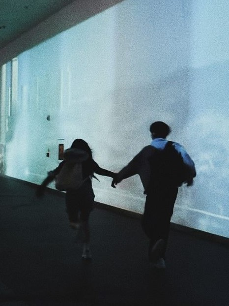
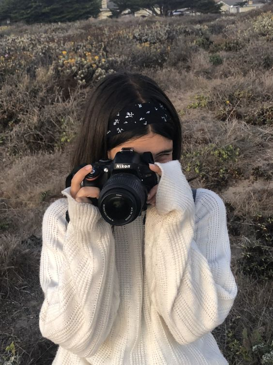

Konten Utama
haii teman teman! saya ingin mengenalkan beberapa hobi atau kesukaan saya kepada kalian.
~~~~~~~~~~~~~~~~~~~~~~~~~~~~~~~~~~~~~~~~~~~~~~~~~~~~~~~~~~~~~~~~~~~~~~~~~~~~~~~~~~~~~~~~~~~~~~~~~~~~~~~~~~~~~~~~
Salah satu hobi saya yang paling saya sukai adalah Travelling seperti naik gunung,curug karena mencari petualangan, menikmati alam, atau sekadar ingin melepas penat. gunung yang saya sudah pernah naiki gunung gede dan gunung prau.
~~~~~~~~~~~~~~~~~~~~~~~~~~~~~~~~~~~~~~~~~~~~~~~~~~~~~~~~~~~~~~~~~~~~~~~~~~~~~~~~~~~~~~~~~~~~~~~~~~~~~~~~~~~~~~~
Salah satu hobi saya yang paling saya sukai adalah memasak karena saya senang saat bereksperimen dengan bahan makanan, kepuasan saat menciptakan hidangan yang lezat, atau bahkan keinginan untuk memberi kebahagiaan kepada orang lain melalui makanan. Memasak juga bisa menjadi bentuk kreativitas dan cara mengekspresikan diri.
~~~~~~~~~~~~~~~~~~~~~~~~~~~~~~~~~~~~~~~~~~~~~~~~~~~~~~~~~~~~~~~~~~~~~~~~~~~~~~~~~~~~~~~~~~~~~~~~~~~~~~~~~~~~~~~
\ Salah satu hobi saya yang paling saya sukai adalah fotograver dan vidiografer karena mengekspresikan kreativitas, bercerita, atau menangkap keindahan di sekitar. dan mempunyai momen momen foto vidio yang tidak dapat diulang kembali menjadi sebuah kenangan yang dapat dikenang selalu.
~~~~~~~~~~~~~~~~~~~~~~~~~~~~~~~~~~~~~~~~~~~~~~~~~~~~~~~~~~~~~~~~~~~~~~~~~~~~~~~~~~~~~~~~~~~~~~~~~~~~~~~~~~~~~~~

Salah satu hobi saya yang paling saya sukai adalah mendengarkan musik karena mempengaruhi suasana hati, memberikan ketenangan, kebahagiaan, atau bahkan semangat.
~~~~~~~~~~~~~~~~~~~~~~~~~~~~~~~~~~~~~~~~~~~~~~~~~~~~~~~~~~~~~~~~~~~~~~~~~~~~~~~~~~~~~~~~~~~~~~~~~~~~~~~~~~~~~~~